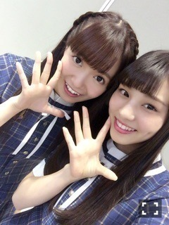

| 2016/10 07 Fri | ひめたん-0o0-その672 |

セブンイレブン限定ミニライブ
15th全国握手会
15th個別握手会
京都3日間ありがとうございました！
全国握手会のペアは伊織ちゃん～＊
ゆるゆるふわふわ～な感じで
すーごい居心地良かった(´,,•ω•,,｀)
きっとふたりのトーンが似てるのかな、
ここのペアええやん！と
凄い発見をした1日でした。
伊織ちゃんファンの皆様
ひめとも仲良くしてくれてありがとう！
そしてひめに会いにきてくれたみんな
ほんとに嬉しかったですー！
ポスターもゲットできたかな？
個別握手会は
ひとりひとりとお話しできて嬉しいです！
一日中たくさんの方が
並んでくださっていたと聞いて、
何が起こっているんだと感じる今日この頃。
それだけ皆さん
ひめたんに会ってみたいなって
思ってくれてるのかなって思うと幸せです。
遊びに来てくださった皆さん
ありがとうございました！
ハロウィン近いのな～どうしよかな～

日曜の夜は、らじらー！サンデー
ゲストは
声優アーツにイヤホンズのお三方、
乃木坂から生駒里奈ちゃんでした！
生駒ちゃんとお洋服
買いに行くお約束したよo(^o^)o
いろいろ企画あったけれど
四者対談楽しかった！
また生駒ちゃん来た時は是非やりたい！
次回の乃木坂週は10/16、
ゲストは西野七瀬ちゃんです～＊
～お知らせ～
雑誌
10/6 Top Yell 11月号
10/15 EX大衆 11月号
10/31 BUBKA 12月号
イベント
10/8 Girls Award
10/9 TGC KITAKYUSHU 2016
リリース
11/9 16thシングル
発売中のTop Yellでは
飛鳥・高山・中元の3人で
神宮ライブの振り返りをしてます～
ポスターもついてくるそうなので是非。
連載企画では殺陣に挑戦しました！
道着が似合っていると
褒めてもらって調子に乗りました！
どや。こちらもよろしくね。
あ、忘れてた、
クイズ出しておいて正解言わないとか
よくやりがちなんだよね私。
前回のブログで私を挟んでたのは
未央ちゃんの指でした( ˆωˆ )
(＊´・ω・＊)
コメント(641)
2016/10/07 23:36